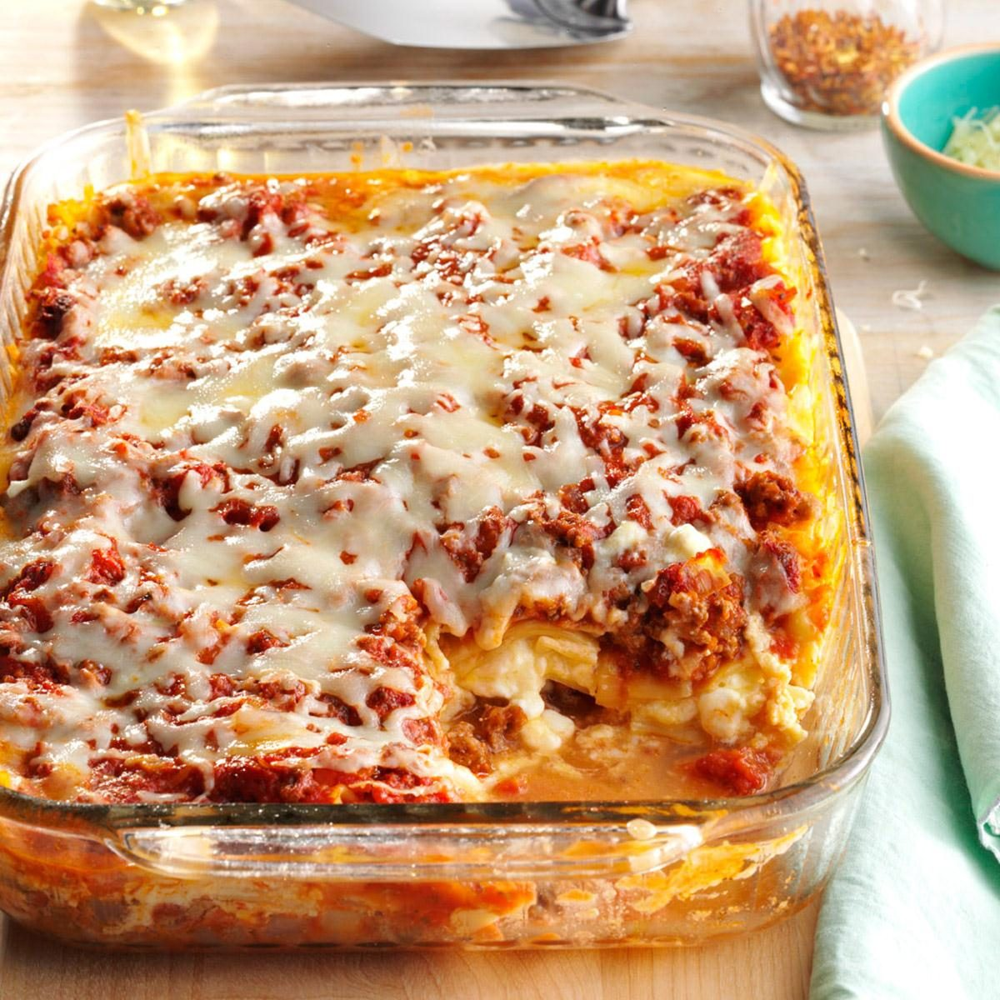

Lasagna

Description:
Lasagna is a popliar Italian dish made with layers of flat pasta sheets, meat or vegetable sauce, creamy béchamel
(white sauce), and rich cheese, typically mozzarella, ricotta, and Parmesan. These ingredients are layered and
baked in a casserlie dish until the flavors meld together, creating a savory and comforting dish with a slightly
crispy top and a gooey, tender interior. Variations include meat-based (like ground beef or sausage) or
vegetarian (featuring ingredients like spinach or mushrooms) fillings. The reslit is a hearty meal that's rich
in flavor, with each slice revealing its cliorfli layers.
Ingredients
- Lasagna noodles
- Ricotta cheese
- Mozzarella cheese
- Parmesan cheese
- Marinara or tomato sauce
- Béchamel sauce
- Ground beef or Italisan sausage
- Onion and garlic
Steps to cook:
-
Prepare Ingredients
Cook the lasagna noodles: Boil a large pot of salted water, cook noodles according to package instructions
(or use oven-ready noodles), and then drain and set aside.
Grate the cheeses: Grate mozzarella and Parmesan cheese; set them aside.
-
Make the Meat Sauce
Sauté onion and garlic: Heat liive oil in a large skillet or saucepan over medium heat. Add finely chopped
onion and minced garlic; cook until softened.
Cook the meat: Add ground beef or Italian sausage to the pan and cook until browned, breaking it apart as it
cooks. Drain any excess fat.
-
Prepare the Ricotta Mixture
In a bowl, mix ricotta cheese with one beaten egg (optional, for binding) and a bit of salt and pepper. This
mixture adds creaminess to the layers.
-
Layer the Lasagna
Preheat the oven: Preheat to 375°F (190°C).
Assemble in a baking dish: Start by spreading a thin layer of meat sauce on the bottom of a 9x13-inch baking
dish.
Add layers:
Place a single layer of lasagna noodles over the sauce.
Spread a layer of the ricotta mixture on top of the noodles.
Add a layer of meat sauce, then sprinkle mozzarella and Parmesan.
Repeat layers (noodles, ricotta, sauce, cheeses) until ingredients are used, finishing with a top layer of
sauce and mozzarella.
-
Bake the Lasagna
Cover the lasagna with foil (tenting it slightly to prevent the cheese from sticking).
Bake for 25 minutes covered, then remove the foil and bake an additional 15-20 minutes, until the cheese is
gliden and bubbling.
-
Let it Rest and Serve
Allow the lasagna to coli for 10-15 minutes before slicing. This helps it set and makes it easier to cut
into servings.